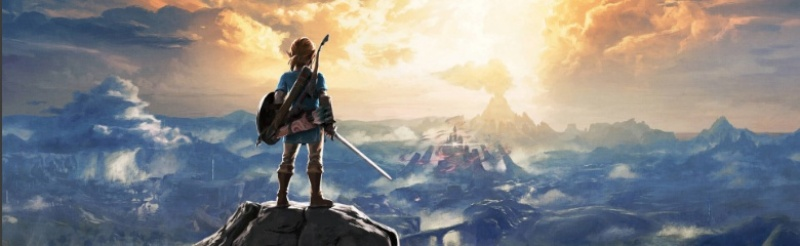

Jogos são formas de entretenimento interativas que envolvem os jogadores em atividades lúdicas, desafiadoras e divertidas. Eles têm sido uma parte fundamental da cultura humana ao longo da história, desde jogos de tabuleiro tradicionais até os modernos jogos de vídeo game e jogos online. Os jogos podem ser jogados por uma única pessoa ou em grupo, e podem ter objetivos variados, como competição, colaboração, resolução de quebra-cabeças, exploração e narrativas envolventes.
ZELDA E SEU MUNDO!
O mundo de Zelda é conhecido por sua história complexa e mitologia, que gira em torno da Triforce, uma relíquia sagrada composta por três partes: Coragem, Sabedoria e Força. Aquele que obtém a Triforce pode obter poderes inimagináveis, o que leva a uma luta constante entre o bem e o mal para controlá-la.
Cada jogo da série geralmente se passa em um reino mágico chamado Hyrule, que está repleto de várias raças, paisagens exuberantes, masmorras perigosas e mistérios a serem resolvidos. Os jogadores devem explorar o mundo, resolver quebra-cabeças, derrotar inimigos e adquirir itens especiais para progredir na história e derrotar Ganon ou outras ameaças.
Ao longo dos anos, a série "The Legend of Zelda" tem sido conhecida por lançar inovações nos jogos de aventura e ação, além de estabelecer um padrão elevado de qualidade em suas narrativas e jogabilidade. Cada novo lançamento continua a expandir e enriquecer o mundo de Zelda, criando uma base de fãs leais e entusiasmados ao redor do globo.

POR QUE JOGAR ELDEN RING?
Com um mundo aberto vasto, diferente dos títulos anteriores da FromSoftware, Elden Ring apresenta um mundo aberto massivo para explorar, desafio e profundidade, a FromSoftware é conhecida por criar jogos desafiadores que exigem habilidade, estratégia e paciência dos jogadores. Elden Ring provavelmente não será diferente, oferecendo uma experiência gratificante para aqueles que gostam de superar obstáculos e aprender com seus erros, com um combate aprofundado, mundo de fantasia rica, e etc.
Em resumo, Elden Ring é altamente esperado pelos fãs devido à combinação de talentos envolvidos em sua criação, seu mundo aberto vasto e sombrio, sua jogabilidade desafiadora e sua promessa de uma experiência de jogo rica e envolvente. Como qualquer lançamento altamente antecipado, o verdadeiro apelo do jogo só poderá ser experimentado de fato quando ele estiver disponível e os jogadores puderem explorar o seu mundo e mecânicas.